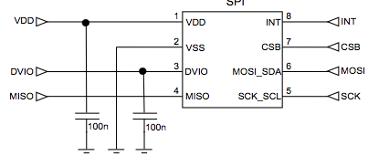

IIC2344 - Clase VIII
Acelerómetro
José Luis Honorato L.
jlhonora@ing.puc.cl
Acelerómetro
- CMA3000-D01
- Output de hasta 400 Hz (Distinto a ancho de banda de muestreo!)
- Interfaz SPI e I2C
- 1.7-3.6V, 70 uA @ 400Hz
- 11 uA @ 40Hz, muy bajo consumo!
- Sensibilidad seleccionable entre 2g y 8g
- Resolución de 8 bits
- Relativamente barato: USD$ 3.4 @1000 unidades, $7.98 unidad
Acelerómetro - Pinout

Acelerómetro - Diagrama de bloques
Acelerómetro
- Diferentes modos...
- Muestreo: Captura datos con el período especificado
- Motion detection: Duerme hasta que se mueve en cierto eje
- Free-fall detection: Duerme hasta que detecta caída libre
- Pin INT indica si hay un nuevo dato o si se detectó movimiento o caída libre, según modo de operación
Acelerómetro - Diagrama de flujo
Consumo de energía
- Por qué baja el consumo junto con el Output Data rate (ODR)?
- Por qué no cambia el consumo si varía el voltaje?
Operación
Configuración por registros
Operación
- Enviar la dirección de memoria del registro de la siguiente forma:
- Leer respuesta del acelerómetro
Si el registro es "Writeable":
- Escribir dato
- Leer respuesta
Lectura de datos
Dirección de registro para datos de aceleración